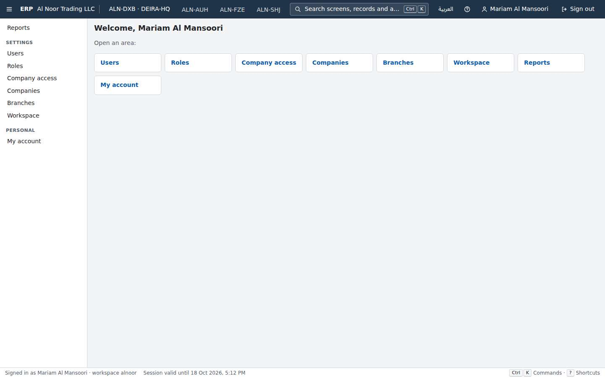
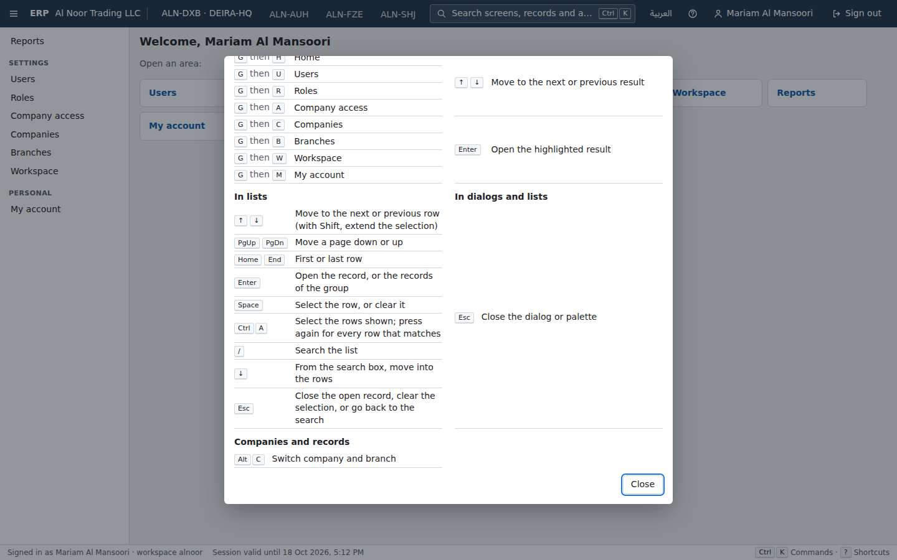
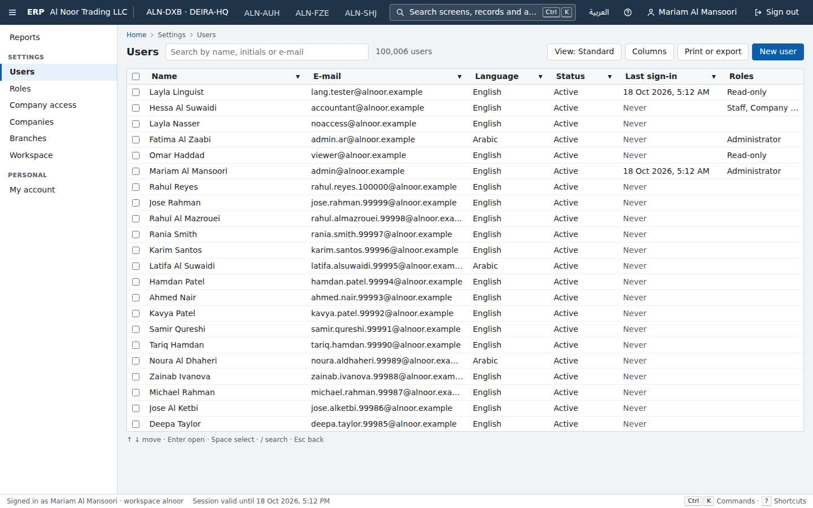
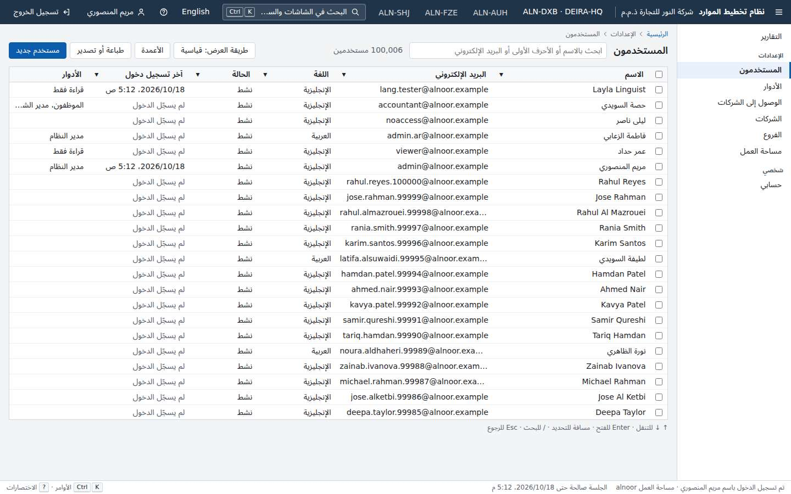
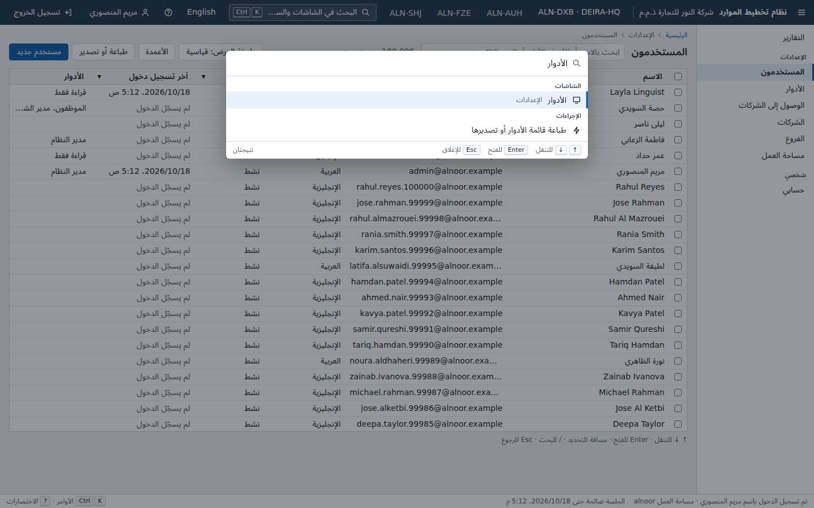
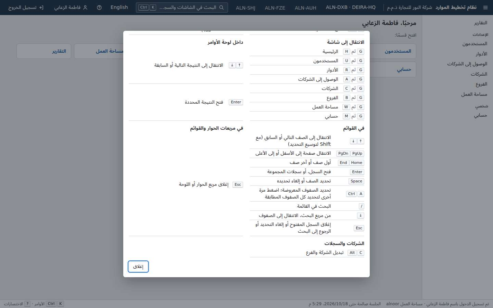
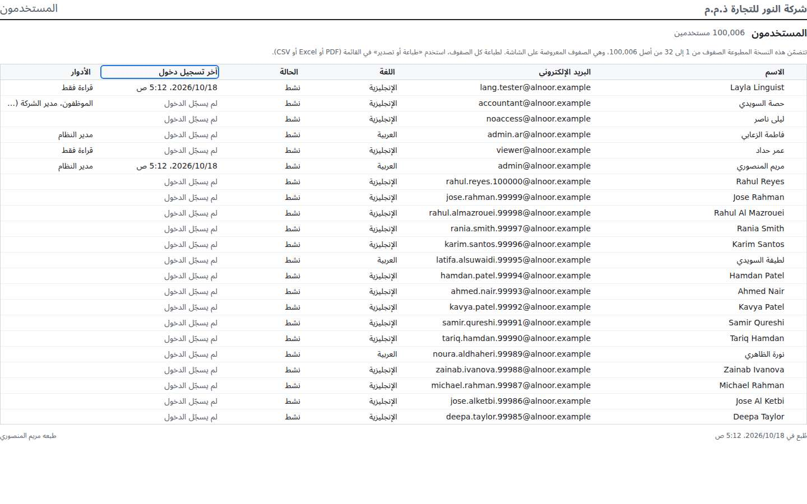
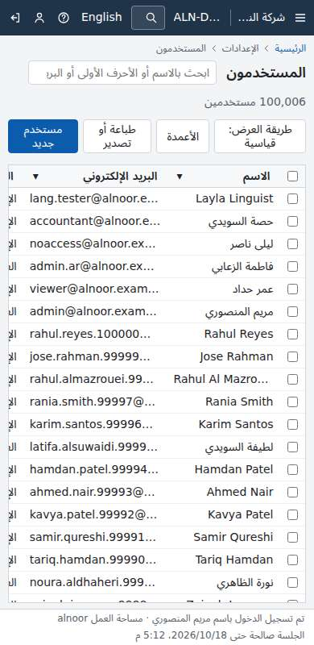

Gauntlet progress
Platform core, judged piece by piece against the owner's bar and Odoo Community. Rebuilt from gauntlet/verdicts/ by gauntlet/tools/record.mjs. Full evidence in ledger.md; owner items in needs-human.md.
Foundation and hard gates
Wave 0 · 10 rounds judgedEvery G2 matrix (A_user_whose_roles_grant_nothing_is_denied_everything, Granting_exactly_one_permission_opens_exactly_the_endpoints_that_declare_it and the carrier matrices) builds its requests with G2PermissionTests.Request. That method fills each route value with Guid.NewGuid() and each body with {}. So a permission decision that depends on route values is never tested: the caller's own user id, a record the caller created, or the caller's own company. Plant P6 in the kernel PermissionAuthorizationHandler passes any request whose id or userId is the caller's own. This is a common real-world shortcut ('people may always manage their own profile'). With it, a user with no roles read their own user record, access and sign-in history, and PUT their own user record (200: display name and language changed). Every gate and module test still passed, about 640 tests across G2, Rules, G1, SelfTests, Kernel and modules. For a UAE trading company, self-service screens are next: My payslip, my expense claims, my leave, my approvals. Each is an action on 'my own' record, and this gate would wave through a missing permission check on all of them. Fix: in G2, add the caller's own ids (user id, own session, a record the caller created, the caller's company and branch) to the route values each deny and grant-one matrix tries, next to the random id. Ratchet the count of self-referencing requests.
- G2 permissions: the gate catches an unchecked action planted in p00's kernel FAIL — Plant P6 (plants/plants.diff) is in the kernel's PermissionAuthorizationHandler (src/Kernel/Erp.Kernel/Security/Permissions.cs). It passes any permission check when the route value id or userId equals the caller's own user id ('people may always manage their own record'). The plant is live. CriticR11Proof failed with it: a no-roles user with a Bearer token got 200 from GET /api/identity/users/{self}, GET /api/identity/users/{self}/access and GET /api/tenancy/access/{self}. The same test passed without the plant (plant-P6PROOF.log, plant-P6NONE.log). CriticR11Escalation showed a write: with the plant, the no-roles user's PUT /api/identity/users/{self} answered 200 and changed its displayName to 'Changed without permission' and its language to ar (plant-P6ESC.log). NOT CAUGHT. G2 plus the Rules gates ran 86 tests and exited 0 (plant-P6.log). G1 plus SelfTests ran 101 tests (plant-P6G1.log). Their only failures were static scans of the other plants' inert text, plus two GateSelfTests 'unexpected oracle' failures caused by roleIds order, which is not P6. The Kernel and module test projects ran 452 tests and all exited 0 (plant-P6M.log). Cause: G2PermissionTests.Request (tests/Erp.Gates.Tests/G2/G2PermissionTests.cs:1035-1043) fills every route id with Guid.NewGuid() and every body with {}, so no deny or grant-one matrix ever names the caller's own id.
- G1 tenant isolation: the gate catches leaks planted in p00's kernel PASS — Plant L6 keeps list totals for 120 s in an instance field of the singleton kernel ListBinding, keyed by search and filter with no tenant. It was caught three ways: by G1ProcessStateTests ('reachable Erp.Kernel.Lists.ListBinding`1._warmTotals ... from singleton ModuleCatalog'), by G1NonInterferenceTests ('92 answers depend on the other tenant's activity') and by G1HttpIsolationTests ('GET /api/identity/users?search=bravocnry... total 1 but for a value that exists nowhere total 0') (plant-L6.log, 25 min). Plant L7 removes the transaction-marker check from the kernel SQL erp.current_tenant_id(). It was caught live by G1DatabaseIsolationTests.A_tenant_set_for_the_whole_connection_or_left_by_an_earlier_transaction_is_ignored (expected 0 rows, saw 30) and statically by G1TenantSettingCodeTests (plant-L7DB.log).
- G1 tenant isolation: critic's live attack (API, documented query parameters, switch inputs, exports, files, side channels, DB roles) PASS — attack/attack.mjs (the r10 critic's script, logic unchanged) ran as the alnoor admin (A) against gulfsteel (B), with B's canary user, saved views, logo, roles and users in place. Coverage: 109 operations, 686 documented query-parameter requests, 465 switch-input requests, 100 exports and 35 filters. Result: LEAKS 0. No id appeared in both tenants' answers, and A's totals did not move when B wrote. B's per-table md5 checksums were identical before and after (attack/attack-run.log). The first run reported a checksum change. Its only difference was where psql's 'DO' line fell between stdout and stderr (every NOTICE line was identical; attack/run1, attack/checksum-note.txt), so the checksum now compares NOTICE lines only. DB (db-roles-rls.txt, db-app-role-attack.txt): erp_app, erp_owner and erp_auth are not superuser and have no BYPASSRLS. All 17 tenant tables have tenant_id NOT NULL with RLS enabled and forced, owned by erp_owner. erp_app with no tenant bound sees 0 users, audit rows and companies. erp_app is refused on sign_in_secret, sign_in_failures, the migration history, ALTER TABLE ... DISABLE RLS, pg_class, pg_stat_user_tables and pg_stats. A session-level tenant setting binds nothing.
- G3 clean clone: ./erp verify (build, migrate, seed, every test) PASS — Fresh clone of 562f649b at /home/shan/critic/p00-foundation-r11. Command: ERP_PROJECT=c-p00-foundation-r11 ERP_HTTP_PORT=20050 ERP_DB_PORT=20051 ERP_VERIFY_HTTP_PORT=20060 ERP_VERIFY_DB_PORT=20061 verify-slot.sh ./erp verify. It took slot 1 at 2026-10-17T23:50:53Z after waiting 0 s and ended 'verify passed in 4415 s'. Stages: dotnet 3771 s, web 3095 s, e2e 4356 s, timing 57 s. 'Ratchet check passed.' Processor time was 10,250 s against the 10,500 s maximum (dotnet 7899, web 2060, e2e 253, timing 37). Wall time was not judged: load peaked at 92 on 16 CPUs. Log: verify-critic-p00-foundation-r11.log.
- G3 clean clone: ./erp up (running seeded demo) PASS — ERP_PROJECT=c-p00-foundation-r11 ERP_HTTP_PORT=20050 ERP_DB_PORT=20051 ./erp up served http://localhost:20050 in 83 s. It seeded alnoor with 100,005 users in 46.2 s plus gulfsteel, and printed the demo sign-ins (erp-up.log). The port and project overrides were honoured. A restart with the data kept took 25 s (erp-up-2.log). './erp tenant create --language ar' made the empty workspace emptyco in 8.4 s (tenant-create.txt).
- Rule gates (licences, no float money, EN/AR parity, audit coverage) and the ratchet PASS — These run inside ./erp verify, which passed. The string check covered 785 keys in English and Arabic. Against r10's c4cfacb, gauntlet/ratchet.json removed no key and lowered no value: dotnetTests 602 to 647, webUnitTests 450 to 503, e2eTests 100 to 106, compareTests 373 to 415, and 11 keys were added. verify.cpuSeconds stays at 10500. The database has no real, double precision or money columns. OpenAPI lists 112 operations, the same as rounds 8 to 10. Audit rows carry field-level old and new values, the actor, the tenant and the transaction (db-audit.txt).
1677 / 1677 passed
0 failed · 0 skipped · 4415s
Clean clone → demo: PASS in 4415s
| Task | Ours | Odoo | Winner |
|---|---|---|---|
| sign-in (sign in to an empty workspace) | 1 · 0 · 0.117s · 2.03s | 2 · 0 · 1.526s · 4.68s | ours |


Round 11 · judged 2026-10-18T03:59:07Z · commit 562f649b8f
Odoo reference rig and blind comparison harness
Wave 0 · 10 rounds judgedRound 12 traces each write back through Chromium's task record. A task 'of no traceable origin' (a message) counts as the step's when two things hold: the page task just before it was caused, within REACTION_SECONDS, and no uncaused page task ran in between. That guard only looks at the page's own main thread and its workers. Timing that lives outside the thread is invisible to it. W1 shows this with a web socket. Set-up turns on a setting. The stand-in pushes 'show' (a Close button appears), then on its own server timer pushes 'go' 500 ms later, and the page approves. One click on Close sits between the two pushes. Nothing in the page ran between the click's input task and the 'go' message, so the message, and the approve write it sends, are credited to the click. The run verifies with 1 step, 0 keys and 0.6-1.4 s, and beats Odoo's follow-approval baseline in 3 of 3 runs. Web sockets are allowed as background channels, so nothing else refuses it. This is the off-the-clock class of rounds 8-11 (S1/S3) again, moved off the page's thread. A second, smaller hole: the delay limits do not add up. A 1.9 s held answer plus a 0.9 s timer gives a 2.8 s delay after a click on plain text, and it is accepted (W3), while S10 refuses 2.5 s. Possible fixes: (a) Credit a message task only when its origin is traced. For web-socket and event-stream messages, use the trace's WebSocket and EventSource receive events, and link them only to a frame the page sent from a caused task. Otherwise treat any 'other' task as uncaused while a long-lived channel is open, or for any message event whose source is not in the page's own thread. (b) Bound the total delay along a chain, from the step's input to the write, not each link alone. For example, chain time at most LINK_SECONDS. (c) Add W1 and W3 as self-tests and mutations. (d) Add self-tests for my missed mutations K6, K8 and K9: a browser key counts its keys, human_plus_wait = human + wait in the summary, and the review page's letters come from assignLetters at random.
- Instrument integrity: the harness catches faults planted in the measuring instrument (this piece's surface) FAIL — Plants: plants/zz-critic-r12.test.mjs, logs plants/critic-r12-plants-run1..3.log. Control C1 (an honest approval click) verifies in all 3 runs. Two plants were MISSED, 3 of 3 runs each, recorded as 'verified' and a 'win' against Odoo's follow-approval baseline (4 steps, 0 keys, 3.521 s): - W1, a WebSocket push. Set-up turns on a setting. The stand-in pushes 'show' over a web socket the page opened at load, so a Close button appears. 500 ms later its own server timer pushes 'go', whatever the person does, and the page sends POST /api/approve. run() is one op.click('#close'). Result: verified, 1 step, 0 keys, machine 0.596 / 0.989 / 1.446 s. The browser record says caused=true, chain ['a DevTools command of step 1', 'a task that followed at once (a message or an observer)']. - W3, a near-limit delay. One click on plain text sends GET /api/tick19, which is held 1.9 s (under LINK_SECONDS 2). A single 0.9 s timer (under REACTION_SECONDS 1) then approves. That is a 2.8 s delay armed by a click on plain text, the R2b/S2/S10 shape that S10 refuses at 2.5 s. Result: verified, 1 step, 0 keys, chain ['input of step 1', 'the answer to GET /api/tick19 after 1.904 s', 'a timer of 0.9 s']. - W2 (the same through a cross-site iframe's postMessage) was refused, but only incidentally ('could not arm its read world: SecurityError'). My own mutations: 9 of 12 caught (plants/critic-r12-mutations.log). Three were MISSED by the whole 410-test compare suite, each judged only on tests that passed unmutated (plants/critic-r12-mutations-fullsuite.log): - K6, an uncounted action: op.browserKey (F5, Alt+Left) records 0 keystrokes. The Odoo switch-to-arabic driver uses it. - K8, a wrong time metric: human_plus_wait_seconds drops the system wait. - K9, a blindness leak: review.mjs fixes the letters, ours always A. assignLetters is unit-tested, but nothing checks that the review page uses it. The builder's own 85 of 85 mutations are caught in verify.
- G1 tenant isolation (product as built) PASS — Every G1 gate test passed in verify. HTTP (attack/http-attack.py and http-attack.out, reused from the r11 critic's tool): signed in as the alnoor admin, I sent 1,016 requests over every OpenAPI operation. They used gulfsteel's user, role, company, branch and tenant ids in paths, query strings, csv/xlsx/pdf export parameters and tenant-switch headers. Result: 0 leaks, 0 writes on B ids accepted, 0 errors. Database (attack/db-attack.txt): - erp_owner, erp_app and erp_auth are neither superuser nor BYPASSRLS. - All 17 tenant_id tables have RLS enabled and forced. - erp_app with no context sees 0 users. In tenant A it sees 100,005 users, 0 of B's users, 0 of B's companies and 0 of B's audit rows. - An UPDATE of B's companies touches 0 rows. An INSERT with B's tenant_id violates the policy. - A tenant id set without the transaction stamp sees 0 rows. - DELETE and UPDATE on audit.entries are denied, DISABLE RLS is denied, and SET ROLE erp_owner is denied.
- G2 permissions (product as built) PASS — Every G2 gate test and on-screen permission plant self-test passed in verify. Spot check (attack/sanity.out): noaccess gets 403 on users, roles, companies, branches and POST users; admin gets 200; anonymous gets 401. p01 adds no product endpoint.
- G3 clean clone (one command: build, migrate, seed, all tests; one command: running seeded demo) PASS — Fresh clone at 738eb55, with ERP_PROJECT=c-p01-odoo-rig-r12 and ports 20150/20151/20160/20161, run through verify-slot.sh. The slot was taken at 16:53:02Z after 0 s of waiting. 'verify passed in 2876 s', rc=0. Processor time 8,960 s against the 10,500 s maximum. Every one of the 13 built ours drivers verified in the health check. The demo with the shared dataset (ERP_SEED_USERS_CSV=gauntlet/compare/data/out/users.csv ./erp up) returned rc=0 in 39 s (up-shared-dataset.log). Port and project overrides work as documented.
- Rule gates (licence, float money, EN/AR strings, audit, OpenAPI, ratchet) PASS — All passed in verify, and the ratchet check passed. Counts: dotnet 631 (min 631), web unit 495 (495), e2e 106 (106), compare 415 (415), build 6 (6), instrument mutations 85 of 85. None fell below round 11's 628/478/102/390/62.
1653 / 1653 passed
0 failed · 0 skipped · 2876s
Clean clone → demo: PASS in 2876s
| Task | Ours | Odoo | Winner |
|---|---|---|---|
| api-update-user (p15) | 2 · 249 · 0.03s · 72.82s | 2 · 184 · 0.276s · 54.62s | odoo |
| arabic-report (p06) | 2 · 0 · 0.133s · 5.3s | 6 · 0 · 3.575s · 15.9s | ours |
| create-company-branch (p02) | 6 · 49 · 0.481s · 22.17s | 12 · 72 · 2.465s · 48.53s | ours |
| create-restricted-user (named; p03) | 5 · 37 · 0.614s · 20.91s | 10 · 46 · 4.393s · 30.05s | ours |
| edit-and-save (p06) | 2 · 14 · 0.152s · 6.97s | 4 · 19 · 0.265s · 10.28s | ours |
| find-user (p03) | 3 · 3 · 0.651s · 8.29s | 6 · 5 · 1.225s · 10.35s | ours |
| new-user-keyboard (p04) | 3 · 4 · 0.09s · 5.57s | 4 · 10 · 0.62s · 5.9s | ours |
| open-third-user-keyboard (p04) | 6 · 6 · 0.153s · 6.13s | 8 · 13 · 0.623s · 6.74s | ours |
| print-list-arabic (p06) | 3 · 13 · 0.476s · 11.09s | 5 · 32 · 4.688s · 19.06s | ours |
| reach-screen-keyboard (p04) | 2 · 2 · 0.074s · 3.66s | 3 · 8 · 0.381s · 3.99s | ours |
| sign-in (p00) | 1 · 0 · 0.032s · 2.03s | 2 · 0 · 0.648s · 4.68s | ours |
| switch-company (p02) | 1 · 0 · 0.124s · 2.65s | 2 · 0 · 0.374s · 5.3s | ours |
| switch-to-arabic (named; p04) | 1 · 0 · 0.076s · 2.65s | 6 · 1 · 1.404s · 15.28s | ours |
| find-record, custom-field-filter, import-5000, follow-approval, add-rate, attach-file, configure-sequence, export-filtered-list, keyboard-navigation, see-and-rerun-job, who-changed-field | – | – | not-compared |


Round 12 · judged 2026-10-17T18:28:31Z · commit 738eb55139
Tenants, companies and branches
Wave 1 · 9 rounds judgedPermissions for a request are the workspace roles plus the roles of the working company. The company scope that RLS enforces is every company the user works in. No tenancy endpoint (companies update and logo, branches create and update, and access update too) checks the permission in the company of the record it touches, and the kernel's SaveChanges guard checks only that the company is in scope. So a group's 'accountant in the Dubai LLC, read-only in the JAFZA entity' (the case per-company roles were built for) can rewrite the JAFZA entity's legal registration (trade licence, TRN, the Arabic-legal-name setting, active flag), its branches, and create new branches in it. Switching to the company where they hold the role is all it takes. The screen offers it too: the FZE form opens with Save while the user works in DXB. G2CompanyRoleTests checks only a user who is working in Y, so every gate passes. Fix: authorise company-owned writes and reads against the grants held in the record's own company, for example a kernel check that every ICompanyOwned row written in a request lies in a company where the declared permission is covered (UserGrants.Covers(permission, companyId)), or narrow the session's write scope to the companies where the permission is held. Add the gate: for every endpoint and permission held only in X, a user working in X who names Y's records (path ids, body companyId) gets 403 and changes nothing. Plant 'permission checked in the working company only' in the gate self-tests. The screens should also offer edit only where the role is held.
- G2 permissions on the real product: a role held only in company X must grant nothing on company Y's records FAIL — attack/cross-company-role.log, attack/cross-company-more.log, attack/cross-company-audit.txt, shot 01. In the seeded demo, accountant@alnoor.example holds 'Company manager' (tenancy.companies.update, branches.create/update) only in ALN-DXB and 'Read-only' in ALN-FZE. While working in FZE, PUT /companies/{FZE} and PUT /branches/{FZE branch} answer 403, which is correct. After switching to DXB, the same user's PUT /api/tenancy/companies/{FZE id} answers 200: the trade licence changed from JAFZA-178204 to X-ALN-DXB-6395. PUT /api/tenancy/branches/{JAFZA-WH} answers 200 (city changed). POST /api/tenancy/branches {companyId: FZE} answers 201 (branch SIDE created in FZE). Audit rows 202124 and 202125 name the accountant. The screen agrees with the API: the FZE company form opens editable with Save while the user works in DXB (shot 01). The session's permissions are the working company's grants, while the company scope (RLS) is every company the user works in. No endpoint checks the permission in the record's own company, so 'every action is denied unless a role grants it' is broken on this piece's endpoints. G2CompanyRoleTests only checks a user who is working in Y, never a user working in X who names Y's record, so the whole gate suite passes.
- G1 tenant isolation: hand attack on the running product (tenancy routes, reports, list prints, workplace, access, default company) PASS — attack/tenant-attack.mjs and tenant-attack.log. Signed in as admin@alnoor.example, I sent 39 requests carrying gulfsteel's company, branch and user ids (GET/PUT companies, logo, branches, branch create, workplace switch, access, default company, companyProfile/branchDirectory reports, list prints as csv with filters). Results: 13 x 200, 8 x 400, 18 x 404, 0 marker hits. The automated G1 suites inside verify (hundreds of thousands of requests) passed.
- G1 database layer (the role the app uses) PASS — db-inspection.txt. erp_app is not a superuser, has no BYPASSRLS and has NOINHERIT. Every tenant table in tenancy, identity, lists and audit has RLS enabled and forced, and tenancy tables carry tenant_isolation plus a RESTRICTIVE company_scope. With no tenant bound, erp_app sees 0 companies. No float or money column exists in tenancy.
- Planted tenant leak in this piece (L1: a migration adds view tenancy.company_names granted to erp_app; company GET puts another tenant's company name in a response header) PASS — plants-batchA.diff, batchA-gates.log. Because RLS is FORCED, the view returns nothing across tenants, so this was not a real leak. Variant L1' adds `ALTER TABLE tenancy.companies NO FORCE ROW LEVEL SECURITY` (plants-batchB.diff). The migrator then refuses to start: 'Security invariants violated after migration: tenancy.companies: row-level security not forced' (plant-up.log).
- Planted company/branch scope leak (L2: branch GET ignores the branch filter) PASS — batchA-gates.log. G1BranchScopeAttackTests failed: 'branch-limited administrator -> GET /api/tenancy/branches/{other branch}: 200 ... but for a value that exists nowhere 404'.
- Planted actions without their permission (P2: PUT /branches/{id} declares tenancy.branches.read; P1b: round 10's workplace-switch side door that sets arabicLegalNameRequired) PASS — batchA-gates.log. P2 is caught by 3 G2PermissionTests (read permission guarding a write; reviewed map mismatch; catalogue use). P1b is caught by the new G2WriteSetTests: 'PUT /api/tenancy/workplace [arabicLegalNameRequired turned] ... wrote update tenancy.companies (arabic_legal_name_required), outside the write set of tenancy.workplace.switch'. Round 10's gap stays closed.
- Planted P1c/P1d: the workplace switch also sets the company's fiscalYearStartMonth (P1d: only for a whole-workspace holder, month 1 to 12 validated) PASS — plant-P1c.diff, plant-P1d.diff, P1c-gates.log, P1d-gates.log. Both are caught by the suite, through G1BranchScopeAttackTests ('PUT /api/tenancy/workplace [fiscalYearStartMonth] ... answered 200, expected a refusal'). G2WriteSetTests passed with P1d planted (146/147 passed, only the branch-scope test failed): the write-set gate sends fiscalYearStartMonth=1 to companies already at 1, so no change reaches the audit trail. See other findings.
- G3 clean clone: one command builds, migrates, seeds and passes all tests; one command serves the seeded demo PASS — verify-critic-p02-tenancy-r11.log, verify.rc rc=0. ./erp verify passed in 4456 s from 'slot 1 of 2 taken at 2026-10-17T22:35:11Z after waiting 0 s'. Wall time was not judged: the machine was busy, with load up to 84 while my planted gate runs and other agents' verifies ran. Processor time was 10294 s against the 10500 s maximum. The ratchet passed. ./erp up served the seeded demo in 69 s (up.log). ERP_PROJECT, ERP_HTTP_PORT, ERP_DB_PORT and ERP_VERIFY_* overrides worked on ports 20250, 20251, 20260 and 20261.
- Rule gates (licences, no float money, EN/AR string twins, audit rows) and owner-signed rules PASS — These ran inside verify and passed. Every write I made left an audit.entries row naming the actor. The TRN rule now converts Arabic-Indic digits, as the owner decided under needs-human #18: the client's trn.ts and the server's TenancyValidation.TaxNumberPattern accept U+0660 to U+0669 and store 0 to 9. The TIN (the first 10 digits) is shown under a 15-digit TRN (shot 01).
1665 / 1665 passed
0 failed · 0 skipped · 4456s
Clean clone → demo: PASS in 4456s
| Task | Ours | Odoo | Winner |
|---|---|---|---|
| create-company-branch (create a company with a branch) | 6 · 49 · 1.173s · 22.17s | 12 · 72 · 5.669s · 48.53s | ours |
| switch-company (switch the active company) | 1 · 0 · 0.154s · 2.65s | 2 · 0 · 0.686s · 5.3s | ours |


Round 11 · judged 2026-10-18T00:28:27Z · commit e9cfec4fd1
Users, roles and permissions
Wave 1 · 10 rounds judgedThe README promises: 'Failed sign-ins pause only the client that failed, on that account.' In the one-command deployment the app sees every request from the compose gateway (172.21.0.1 or 172.22.0.1). Only a browser that has signed in to that account before is told apart, by its device cookie. An anonymous attacker who knows an e-mail address sends 5 wrong passwords with no session. After that, the owner's correct password from a new laptop, a fresh browser, or cleared cookies answers 429 with Retry-After 900. The message even says 'from this device'. The set-up-code path is a fresh browser by definition. So a newly invited employee, or the finance manager on a replacement laptop, can be kept out indefinitely at 5 requests every 15 minutes. The administrator's tools cannot help: - The sign-in history and 'Sign-in is paused from 1 address' show the same 172.x address for the attacker's script and the owner's laptop. The user agent is the only difference. - 'Allow sign-in again' lifts the pause for the attacker too. This has been an 'other finding' since round 1. It is now the largest p03 weakness left, because lockout and sign-in history are in this piece's scope and everything else in scope works. Fix: - Make the shipped deployment see real client addresses: put a reverse proxy in compose with ERP_KNOWN_PROXIES set by default, or use host networking for the published port. Show in the history when an address is a proxy or gateway. - Until then, do not let failures from an unrecognised client pause a first sign-in that presents a valid set-up code. - Add a test: a second client with no device cookie, behind the same gateway, still signs in after another client's 5 failures.
- G1 tenant isolation of the product as built PASS — No leak found. API attack (attacks/g1-attack-all.mjs, g1-a-vs-b-r11.txt, g1-run.log): alnoor's admin made 1,951 judged calls against gulfsteel, on every one of the 67 OpenAPI routes, not only identity's. They used each of B's ids (users, roles, companies, branches, views, tenant, canary user and role) in the path and in body fields. They also tried ?removePasskeys=true, ?passkeyId=, the tenant-switch headers (X-Tenant, X-Tenant-Id, X-Erp-Tenant, X-Workspace), tenant query fields, every list export (CSV, XLSX, PDF; English and Arabic) and the four reports with B's role and company ids. - XLSX files were unzipped before searching. - PDFs were text-extracted with pypdf (pdf-attack.txt): 36 PDFs, 0 leaks. Two controls confirmed the extraction works: B's own export does contain its canary, and A's export contains alnoor. - A hash of B's identity state was the same before and after. Existence oracle: for all 80 id routes and bodies, a B id answers exactly as a random id does (oracle-all.txt, view-oracle.txt). Database, as erp_app (db-app-role.txt): - With no tenant bound, 0 rows. - Bound to A: 100,005 users, 200,074 audit rows, 0 from B. - UPDATE and DELETE on B's rows changed 0 rows. An INSERT for B was refused by RLS. - row_security=off, SET ROLE erp_owner/postgres/erp_auth and DISABLE RLS were all refused. - All 17 tenant tables have RLS enabled and forced, and no erp role has bypassrls. - The only security-definer functions erp_app can run are verify_sign_in and resolve_session. resolve_session needs a token hash and refuses inside a tenant-bound transaction. No files or background jobs exist yet beyond company logos, which the API attack covered.
- G1 gate catches tenant leaks planted in this piece's surface PASS — Plants: plants/apply-r11-plants.py; diff in plants/r11-plants-server.diff. The run is plants/planted-server-suite.log and plants/run-server/*.log: the full .NET stage through verify-slot, exit 1. L1: GET /roles/{id} gets an endpoint filter with a captured dictionary. A 404 is then answered with any tenant's role that was read before. Caught by: - G1HttpIsolationTests ('tenant A administrator (bearer) → GET /api/identity/roles/<B id> → 200: response contains tenant B marker'); - G1NonInterferenceTests ('8 answers depend on the other tenant's activity'); - G1ProcessStateTests ('closure ...RoleEndpoints.Map.roleMemo: a captured mutable ConcurrentDictionary'). L2: GET /users/{id}/access gets the same memo, held by a scoped service whose DI factory captures one shared dictionary. Caught by G1HttpIsolationTests (15 /access lines) and G1NonInterferenceTests. G1ProcessStateTests did not list it (see other findings).
- G2 permissions of the product as built (restricted roles, escalation, screens hide) PASS — Screen and API (walks/w1.txt, w2.txt; screenshot 05): a user made by keyboard with the Read-only role signs in with the set-up code and chooses a password. They then see: - no 'New user', and Alt+N opens nothing; - nothing in the palette for 'new'; - a record showing only Close, with 0 editable fields; - 403 from POST /api/identity/users, POST /api/identity/roles and PUT /api/tenancy/tenant. Escalation (attacks/escalate.txt): a helpdesk role holds users read/update/create and roles read/update/create, and works in ALN-DXB. Every escalation attempt was refused with 403: - giving themselves Administrator, everywhere or in one company; - adding resetPassword or tenant.update to their own role; - creating a role beyond their own permissions; - copying Administrator; - giving Administrator to another user, everywhere or in their shared company, or creating a user with it; - changing the Administrator's e-mail, deactivating, resetting, signing out, revoking with removePasskeys, changing the default company, unblocking or deleting the Administrator; - deleting or changing the system role. The bulk 'all that match' deactivation answered refusedBeyondOwn:1 with changed:0. Revocation is immediate (attacks/revocation.txt): removing a permission from a role gives 403 on the next call of an already signed-in session. Deactivation ends the session (authenticated:false, then 401).
- G2 gate catches missing permission checks planted in this piece's surface PASS — S1: POST /users/matching/active updates users beyond the caller (the 'within' condition dropped). Caught by G2AccountTakeoverTests.Acting_on_users_chosen_by_a_search_or_filter... ('aimed at the Administrator by a user holding only [identity.users.update, identity.users.read, identity.roles.read] answered 200 and changed them'). S2: POST /roles/{id}/copy without the roleBeyondOwn check. Caught by G2AccountTakeoverTests.Creating_from_a_role_cannot_grant_more_than_the_caller_holds ('on the Administrator role ... answered 201 (expected 403)'). S3: GET /users/{id}/sign-ins needs identity.users.read instead of identity.signIns.read. Caught by G2PermissionTests ('declares identity.users.read; the reviewed map identity.txt says identity.signIns.read'). U1 (screen): 'Delete role' button and palette command shown without identity.roles.delete. 11 web tests fail, among them screens.test.tsx 'without identity.roles.delete there is no Delete role' and paletteActions.test.tsx ('Delete role sent DELETE /api/identity/roles/r-clerk'). The unplanted control passes 495/495 (plants/web-U1-planted.log, web-U1-control.log).
- G3 clean clone: one command builds, migrates, seeds and passes all tests; one command runs the seeded demo PASS — Fresh clone of 65a646d. Verify ran with ERP_PROJECT=c-p03-identity-r11 and ports 20350/20351/20360/20361 overridden through the environment, through verify-slot. - 'slot 2 of 2 taken at 2026-10-17T14:53:56Z'; 'verify passed in 3634 s'; 'Ratchet check passed'. - Processor time 9,957 s against a maximum of 10,500 (dotnet 7,642, web 1,917, e2e 334, timing 64). - Wall time was not judged by the ratchet: load peaked at 58.9 on 16 CPUs. ./erp up served the seeded 100,005-user demo in 72 s, 64 s with ERP_SEED_USERS_CSV, and 83 s on a later restart.
- Rule gates (licences, decimal money, Arabic twins, audit) PASS — - The rule-gate tests passed in verify. - Since r10 no dependency file changed (Directory.Packages.props, package.json and lock files) and no Identity backend file changed. There is no float in Identity. - audit.entries recorded every identity write with its actor, including the comparison harness's create and delete of users, user_roles and user_credentials. password_hash and token_hash are stored as '[redacted]'. - The ratchet only moved up (dotnet 629 to 631, web 479 to 495, e2e 102 to 106, new g2.paletteRequiresRuns 26). No test was removed or skipped, and nothing under bar/ or in CLAUDE.md changed.
1628 / 1628 passed
0 failed · 0 skipped · 3634s
Clean clone → demo: PASS in 3634s
| Task | Ours | Odoo | Winner |
|---|---|---|---|
| create-restricted-user (named) | 5 · 37 · 1.079s · 20.91s | 10 · 46 · 8.214s · 30.05s | ours |
| find-user (find one user among 100,000) | 3 · 3 · 0.734s · 8.29s | 6 · 5 · 2.055s · 10.35s | ours |


Round 11 · judged 2026-10-17T16:45:31Z · commit 65a646dfbd
English/Arabic app shell
Wave 1 · 8 rounds judgedThe shell is keyboard-first, so a user nearly always has the focus on a control when they press Ctrl+P or pick 'Print this screen'. The print stylesheet does not turn focus styling off. In print media the focused element keeps its 'solid 2px rgb(26,115,232)' outline, so the printed Arabic users list shows a blue box around a column header ('آخر تسجيل دخول' in 07-print-users-ar.jpg). This print base is what every later report will use: invoices, delivery notes and statements a UAE trading company hands to customers. A visible UI artefact on those documents makes them look unfinished, and Odoo's printed reports do not carry one. Everything else in the piece holds: every gate caught every plant, and ours beats Odoo on all four compared tasks. Fix: in the shared print stylesheet, set outline: none and box-shadow: none on :focus and :focus-visible, and blur nothing (the focus must come back after printing). Add a unit or e2e check that, under print media, the focused element has no outline, in English and Arabic.
- G1 tenant isolation of the product (my own attacks) PASS — isolation-probe.txt (drivers/isolation_probe.py). Signed in as admin@alnoor.example, I sent 1,024 requests at Gulf Steel. They covered every GET in the OpenAPI document with B's 30 ids and codes in the route; tenantId, tenant, q, search and companyId query values; X-Tenant-Id/X-Tenant headers; list prints and exports; report runs; and the company logo path. I also sent PUT /api/identity/me/preferences in all four language/digit combinations with B's user and tenant ids in the body, query and headers, and DELETE on B's users, roles, companies and branches. Result: 0 of B's 33 own markers in any answer (markers A also holds, such as seeded role names, are excluded), and every DELETE got 404. B's preferences were still en/latn afterwards. Database: all 17 tables with tenant_id have RLS enabled and forced. erp_app, erp_auth and erp_owner are not superusers and have no BYPASSRLS. erp_app with no tenant bound sees 0 users.
- G1 gate self-test on this piece's surface (plants) PASS — plants/plants-summary.txt. In a separate clone I planted 4 server leaks on the shell's own endpoints (plant-server-S1-L4-L6-L10-L13.diff). G1 ran 65 tests: 61 passed and 4 failed, and every plant was caught (plants-S1-gates.log). L4 is round 9's miss: a process-wide count of Arabic switches sent back as cookie erp.tip. G1ShellAnswers and G1NonInterference caught it. L6 is also round 9's miss: the time of anyone's previous switch in a header. G1ShellAnswers caught it ('falls inside a request of tenant B's and no request of tenant A's'). L10 is new: GET /api/auth/session sends ETag W/"menu-N" from a version that every tenant's switch raises. G1ShellAnswers caught it. L13 is new: the Arabic display name cached in a temp file keyed by the e-mail local part ('admin') and returned by PUT /me/preferences. G1HttpIsolation caught it with 723 leaks of B's canary. Client plant C4 is new: the user's recent screens mirrored into the device key erp.navOpen, which sign-out keeps. clientIsolation.test.tsx caught it in EN and AR. Round 9's G1 gap is fixed.
- G2 permissions (product and plants on this piece's surface) PASS — Client plants, each run against the whole 504-test web suite (client-plants.sh). P4 is round 9's miss: the palette ignores an action's 'requires'. CAUGHT, 3 tests failed. P6: the shell renders a screen whose route permission the user lacks. CAUGHT, 7 failed. P7: the palette queries every record source regardless of permission. CAUGHT, 2 failed. Server plant P8: POST /api/identity/me/preferences/reset with RequireAuthorization() only. CAUGHT: the host refuses to start ('declares no permission') and all 27 G2PermissionTests fail (plants-S2-gates.log). Live: the viewer's palette offers nothing for 'new'. The no-access user gets Home plus shell actions only, and a deep link to /identity/users shows 'No access'.
- G3 clean clone: one command builds, migrates, seeds and passes all tests; one command runs the demo PASS — Fresh clone at b9afbfd6. Slot 1 was taken at 2026-10-18T01:04:34Z with no wait, and the run printed 'verify passed in 4253 s'. Processor time was 9,809 s against the 10,500 s maximum. Load peaked at 55.9, so the wall-time maximum was not judged. The ratchet passed. ./erp up served the seeded demo (100,006 users in Al Noor) in 62 s on port 20450 under compose project c-p04-shell-r10. A second up took 22 s. Ports and the project were overridden through ERP_PROJECT, ERP_HTTP_PORT, ERP_DB_PORT and ERP_VERIFY_* as the README documents.
- Rule gates (licences, decimal money, EN/AR string twins, accessibility, audit) PASS — All ran inside the verify and passed: 'String check passed: 78 source files, 785 keys in English and Arabic, 78 plural messages', 'Accessibility check passed: 1120 JSX elements', plus the .NET rule tests. Database: each language/digits switch wrote an audit.entries row with actor, time, record and old/new values (db-audit-preferences.txt). Server validation messages come back in Arabic for an Arabic user. Colour contrast from the tokens: muted text on the background is 5.81:1, the accent on white 6.67:1.
1681 / 1681 passed
0 failed · 0 skipped · 4253s
Clean clone → demo: PASS in 4253s
| Task | Ours | Odoo | Winner |
|---|---|---|---|
| switch-to-arabic | 1 · 0 · 0.173s · 2.65s | 6 · 1 · 3.328s · 15.28s | ours |
| reach-screen-keyboard | 2 · 2 · 0.116s · 3.66s | 3 · 8 · 0.791s · 3.99s | ours |
| open-third-user-keyboard (critic-added r2, kept; now registered in the harness) | 6 · 6 · 0.217s · 6.13s | 8 · 13 · 1.367s · 6.74s | ours |
| new-user-keyboard (critic-added r7, kept; now registered) | 3 · 4 · 0.168s · 5.57s | 4 · 10 · 1.345s · 5.9s | ours |
| keyboard-navigation (open the third contact by keyboard) | – | 9 · 10 · 0.92s · 7.25s | not-compared |
















Round 10 · judged 2026-10-18T02:16:21Z · commit b9afbfd6
List and search framework
Wave 1 · 5 rounds judgedp05 promises that every list registered with the framework is attacked automatically by G1. Every later module (Contacts, invoices, stock) relies on that promise for its 100,000-row lists. But every gate environment is SeedPlan.Gate with 25 users per tenant. ListAnswers, NonInterference and HttpIsolation judge totals carefully: sorted, keyset, offset, grouped, both directions. They do it only at a volume where no 'large list' code path ever runs. The most natural optimisation for a 100,000-row list is to stop counting exactly and show an estimate. The estimate PostgreSQL offers (pg_class.reltuples, pg_stat_user_tables.n_live_tup, EXPLAIN row estimates) covers every tenant, because row-level security does not apply to catalog statistics, and erp_app can read them. Plant L12 does exactly this past 10,000 rows. Nothing structural flags it either: ProcessState only sees in-process state, and TenantSource and ReviewedLookup do not look at catalog reads. Fixes: (a) judge list answers also against a tenant pair where both tenants hold a demo volume of rows (the timing stage's 100,000-row fixture exists already). Sending each list's unfiltered, sorted, offset and grouped query as the smaller tenant, the total must equal its own row count. (b) Add a source or SQL-trace rule: product code and the SQL it runs in a request may not read pg_class, pg_stat*, pg_statistic or EXPLAIN output, unless that is reviewed. (c) Keep the volume threshold out of reach of a gate that only seeds tens of rows: give the gate a 'large list' profile.
- G1 tenant isolation (product as built) PASS — The gate suite is green inside verify. I attacked as admin@gulfsteel against alnoor (100,005 dataset users) with 27 targeted probes and found 0 leaks (attack-api.txt). The probes covered needle e-mail, name and Arabic searches, eq and OR filters, quote injection, % and _ wildcards, X-Tenant headers, tenantId query parameters, groupBy, skip=99000, a replayed alnoor cursor, alnoor's user id, GET/PUT/DELETE of alnoor's shared view through both route kinds (all 404, and the view stayed), the views list, the definition, CSV/XLSX/PDF list prints, and the bulk 'matching' count oracle (409 with gulfsteel's own count). I then ran 257 probes over all 5 registered lists (users, roles, companies, branches, access): unsorted and sorted, each with alnoor's ids, e-mails and names as searches. That found 0 leaks (attack-api-lists.txt). In the database (db-inspect.txt), lists.saved_views has RLS enabled and forced with tenant_isolation. erp_owner, erp_app and erp_auth have no superuser and no BYPASSRLS. Unbound, erp_app sees 0 users and 0 views. Bound to gulfsteel, it sees 1,005 users, 0 alnoor users and 0 alnoor views, and an UPDATE of alnoor's views touches 0 rows.
- G1 catches tenant leaks planted in p05's surface FAIL — Plant L12 (L12-estimated-total-from-table-statistics.patch, about 25 lines in ListBinding.QueryAsync) is a common optimisation for big lists. When a list has no search and no filter and the table holds more than 10,000 rows, the total shown is pg_class.reltuples, the planner's estimate of the whole table across every tenant, instead of count(*). All 56 G1 tests PASSED with it, run in the product's own toolbox image: ProcessState, TenantSource, ReviewedLookup, NonInterference (17 min), HttpIsolation/ListAnswers (34 min) and WriteOracle (run-L12-g1-all.log, 04:44 to 05:18Z). Live on a plant stack (plant-live-L12.txt), gulfsteel's GET /api/identity/users (unfiltered, and sorted) answers total 101,010, which is every tenant's users. Gulfsteel has 1,005, and the same rows through a filter that matches everything say 1,005. Alnoor sees 101,010 too, against its real 100,005. On screen, gulfsteel's Users list header reads '101,010 users' (plant-L12-gulfsteel-users-shows-all-tenants-total.jpg). The blind spot: every gate environment seeds 25 users per tenant (SeedPlan.Gate), so the list-answer gates never reach a volume where a volume-dependent code path runs. No structural rule forbids product code from reading cross-tenant catalog statistics (pg_class, pg_stat_*, EXPLAIN row estimates). Kept fixed from round 7: plant L11 (file-local static memo) is now caught by ProcessState (run-r7-plants-L11-P6-regression.log).
- G2 permissions (product as built) PASS — The gate suite is green. In the browser, viewer@alnoor's save dialog has no share box (ui-scope.txt), and the viewer opens Users on the administrator's shared default view (09-viewer-opens-shared-default.jpg). Live on the P8 plant stack, before the plant path ran, the viewer's direct POST /shared-views answered 403 and the definition said canShare false (plant-live-P8.txt).
- G2 catches unpermissioned actions planted in p05's surface FAIL — Plant P8 (P8-personal-route-creates-shared-view.patch, 6 lines in ViewEndpoints.cs) adds an isShared body field to SaveViewRequest. It is documented in the hand-written view schema, as a 'Share with the team' box in the save dialog would need. Create() honours the field on POST /views, which declares only the list's read permission, so lists.views.share is never checked. All 36 G2 tests PASSED (run-P8-g2-all.log), including Every_list_endpoint_needs_the_lists_own_permission_and_shared_view_writes_need_sharing. All 39 Rules tests PASSED (run-P8-rules.log). Live (plant-live-P8.txt): viewer@alnoor has canShare false and gets 403 on POST /shared-views. Yet POST /views {isShared:true,isDefault:true} answers 201 isShared true isDefault true. The viewer's view replaces the workspace's 'Team view' as the shared default that every user opens. The blind spot: the G2 list test builds view bodies from a fixed field list (PersonalBody/ViewRequest) and never from the request schema. FieldVariants, which does derive fields from the schema, runs only for grant-bearing records and account takeover. Kept fixed from round 7: plant P6 (a personal default clears the shared default) now fails the G2 list test (run-r7-plants-L11-P6-regression.log).
- G3 clean clone PASS — I cloned 35ba5bc fresh and ran ERP_PROJECT=c-p05-list-search-r9 ERP_HTTP_PORT=20550 ERP_DB_PORT=20551 ERP_VERIFY_HTTP_PORT=20560 ERP_VERIFY_DB_PORT=20561 through verify-slot.sh ./erp verify. It passed in 4067 s from 'slot taken' (04:34:14Z, no wait). Processor time was 9556 s against a maximum of 10500. The ratchet passed: .NET 550, web 392, e2e 89 and compare 353, each at its minimum (verify-critic-p05-list-search-r9.log). The wall time is over the 3600 s quiet-machine figure, but it was not judged because the machine was busy (my plant run of G1 ran beside it, and other agents' load was up to about 75). A plain ./erp up gave the seeded 100,005-user demo in 108 s (up-critic-p05-list-search-r9.log). With ERP_SEED_USERS_CSV it took 100 s (up-dataset-…log). The port and project overrides worked.
- Rule gates (licence, money, strings, audit, list index) PASS — Green inside verify. The string check passed (711 keys in English and Arabic). The users list has trigram GIN indexes on display_name, email_normalized and display_name_ar, and (tenant_id, column, id) indexes for sorting (db-inspect.txt). Saved-view writes leave audit rows with the actor and old and new values (11 insert and 1 delete after my browser session).
1384 / 1384 passed
0 failed · 0 skipped · 4067s
Clean clone → demo: PASS in 4067s
| Task | Ours | Odoo | Winner |
|---|---|---|---|
| find-user (find one user among 100,000; p16 Contacts is not built, so the dataset's 100,000 users) | 3 · 3 · 0.579s · 8.29s | 6 · 5 · 1.149s · 10.35s | ours |
| find-record (find one contact among 100,000) | – | – | not-compared |


Round 9 · judged 2026-10-10T05:52:04Z · commit 35ba5bc166
Form and report framework
Wave 2 · 7 rounds judgedThe new phone field and the completed-entry save remove the save key and a step, so ours now wins steps, machine seconds and modelled seconds. Keystrokes still tie. Ours' credited path types +971505550199 (14 keys); the instrument requires +971 to be typed. Odoo's real expert path types the same 14 keys: triple-click the phone field, type +971505550199, click Save. Odoo shows '+971 50 555 0199' on the form, stores '+971505550199', and the instrument credits that entry ('separators free'). The harness misses this for two reasons. The Odoo driver types the spaced number and its verify() demands the exact spaced string, which is stricter than the instrument's own rule. And the instrument still cannot express a triple-click. A tie is a loss, and editing a field is the most frequent action every later module will build on this form. The digits themselves cannot be cut, so ours needs a credited path that is strictly shorter in keys. The clearest one: ours already supplies +971, so the person types only the 9-digit national number (505550199, 9 keys), and ours stores the full international number. Odoo's 9-digit entry stores just '505550199', without the country code, so Odoo cannot be credited for it, and Odoo stays at 14. For that path to count, the measuring instrument must accept a fixed prefix that a field shows as its own, before the clock, as not needing to be typed. That decision belongs to p01 and the lead; ours' driver comment already describes the 9-digit path. A product alternative is any entry ours can do in fewer keys than 14 that the instrument credits.
- G1 tenant isolation (product as built) PASS — Every G1 test passed inside verify. Tenant_A_cannot_reach_tenant_B_through_any_endpoint ran 37 m 51 s, and the HTTP-attack self-test passed. I attacked the live demo myself (tools/attack.mjs, browser/attack-print-surface.txt). Signed in as Gulf Steel, I sent 1,136 requests to Al Noor's data through every report and printable list: json/csv/xlsx/pdf × en/ar, with Al Noor's company and role ids as parameters, tenant/tenantId query fields, and X-Tenant-Id, X-Company-Id and X-Branch-Id headers. I also sent GET and PUT to Al Noor's company records. PDF streams were inflated before searching. 0 leaks and 0 victim rows changed; a cross-tenant PUT answers 404, the same as a random id (browser/attack-put.txt). Database (browser/db-rls.txt): erp_owner, erp_app and erp_auth have no superuser and no BYPASSRLS. All 17 tables with tenant_id have RLS enabled and forced. The tables without tenant_id are the migration histories, identity.sign_in_secret and the new identity.sign_in_failures (hashed 32-byte key plus time; no grant to erp_app).
- G1 catches a leak planted in p06's surface PASS — Plant L9 (plants/plant-L9-xlsx-cache-without-tenant.diff) is a 30-second XLSX workbook cache in ReportEndpoints.Output. Its key is report, language, grouping, parameter texts and columns, with no tenant and no issuer. It was caught: G1HttpIsolationTests failed with 536 leaks, e.g. 'tenant A administrator (cookie) → GET /api/reports/lists/tenancy.access?format=xlsx&language=ar… [an answer shape tenant B asked for first] → 200: response contains tenant B marker CNRYECD3BA8253' (plants/run-L9.log, 28 min).
- G2 permissions (product as built) PASS — All G2 tests passed inside verify (G2ReportData 2 m 57 s). Live checks (browser/explore-viewer.log): the viewer's company form has 21/21 fields disabled and no Save button. Typing 505550199, Enter, Ctrl+S and Alt+Z sent 0 writes, and the viewer's direct PUT got 403. noaccess@ gets 403 on the catalog, report run, list print and company read.
- G2 catches permission faults planted in p06's surface PASS — Plant P14 (plants/plant-P14-report-run-needs-only-catalog-read.diff) makes every /api/reports/run/* route require only reports.catalog.read. It was caught twice in plants/run-P14.log: G2PermissionTests says 'GET /api/reports/run/identity.roleSummary declares reports.catalog.read; a report route must declare identity.roles.read', and G2ReportDataTests also fails. Plant W4 (plants/plant-W4-phone-field-ignores-read-only.diff) is this round's new PhoneField ignoring a read-only form. It was caught by vitest, 1 failed / 488 passed: 'the phone field and a completed entry > a user who may only read the record cannot save it by completing a number' (plants/run-W4-vitest.log).
- G3 clean clone PASS — Fresh clone at 08159a4f, project c-p06-form-report-r7, ports 20650/20651 and verify ports 20660/20661 set through ERP_PROJECT, ERP_HTTP_PORT, ERP_DB_PORT, ERP_VERIFY_HTTP_PORT and ERP_VERIFY_DB_PORT. `./erp verify` through verify-slot.sh took the slot at 13:36:15Z and passed in 3,897 s. Processor time was 9,800 s of the 10,500 s maximum. Wall time is not judged because the machine was busy (load up to 67, with integ-verify and my plant runs alongside). The ratchet passed. `ERP_SEED_USERS_CSV=gauntlet/compare/data/out/users.csv ./erp up` brought up the seeded demo in 69 s (up.log).
- Rule gates (licence, money, strings, audit) PASS — They pass inside verify: the NuGet, npm and font licence gates and the string, money and audit rules. Form saves, including completed-entry auto-saves and their Undo, leave audit rows with the actor and old/new phone (browser/db-audit-phone.txt).
1619 / 1619 passed
0 failed · 0 skipped · 3897s
Clean clone → demo: PASS in 3897s
| Task | Ours | Odoo | Winner |
|---|---|---|---|
| edit-and-save | 2 · 14 · 0.227s · 6.97s | 3 · 14 · 0.438s · 8.9s | odoo |
| print-list-arabic | 3 · 13 · 0.63s · 11.09s | 5 · 32 · 7.085s · 19.06s | ours |
| arabic-report | 2 · 0 · 0.135s · 5.3s | 6 · 0 · 4.87s · 15.9s | ours |


Round 7 · judged 2026-10-17T14:41:34Z · commit 08159a4f
Audit trail
Wave 2 · 0 rounds judgedWaiting for its first critic.
Multi-currency
Wave 2 · 0 rounds judgedWaiting for its first critic.
Tenant-defined custom fields
Wave 2 · 0 rounds judgedWaiting for its first critic.
Document numbering
Wave 2 · 0 rounds judgedWaiting for its first critic.
Attachments
Wave 2 · 0 rounds judgedWaiting for its first critic.
Background jobs
Wave 2 · 0 rounds judgedWaiting for its first critic.
Approval flows
Wave 3 · 0 rounds judgedWaiting for its first critic.
Import and export
Wave 3 · 0 rounds judgedWaiting for its first critic.
Documented API for everything
Wave 3 · 0 rounds judgedWaiting for its first critic.
Shared Contacts directory
Wave 2 · 0 rounds judgedWaiting for its first critic.